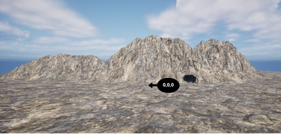
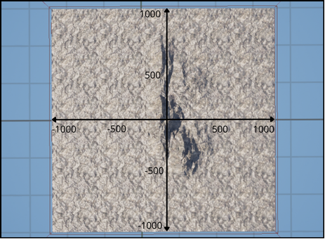
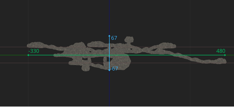
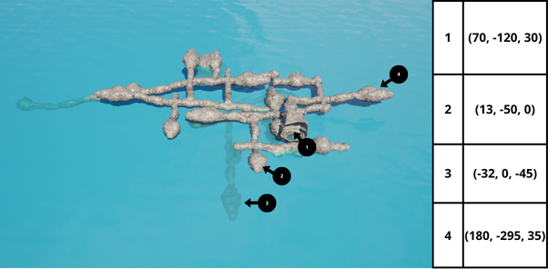

Large-Cave

Overview
The Large-Cave environment utilizes the same structural layout as the Small-Cave but at a significantly larger scale. The primary objective of this environment is to simulate wide-area exploration and long-range autonomous navigation.
In this version, the drones and agents are much smaller relative to the cave’s dimensions. This creates a “vast void” effect, where walls are often beyond the immediate reach of short-range sensors, forcing agents to rely on long-range Lidar, SLAM, and advanced path-planning algorithms to map the massive chambers.
- Just like its smaller counterpart, it features three environmental zones:
Fully Submerged: Massive flooded vaults for deep-water exploration.
Semi-Submerged: Large transition areas with significant air pockets.
Dry Zones: Cathedral-like dry chambers.
Environment Dimensions & Coordinates
Due to the upscaling, the coordinate ranges and sensor configurations must be adjusted accordingly to account for the increased distances.
Top-Down Layout

While the topological network of tunnels remains the same, the operational area is expanded. The footprint spans from -1350 to 1350 units on the longitudinal axis and -1005 to 1005 units laterally (matching the Pier-Harbor scale). This provides vast corridors where maintaining a signal and orientation is significantly more difficult.
Vertical Profile and Water Line

- The vertical operational envelope is also upscaled to provide massive height and depth:
Water Surface (Z=0): The green horizontal reference line.
Maximum Depth: Submerged sections reach down to -80 meters.
Maximum Altitude: Dry chambers and cathedral ceilings extend up to +100 meters above the water line.
Landmarks and Waypoints

- Strategic waypoints are now further apart, requiring efficient battery management and long-range communication:
Grand Entrance (1): A massive underwater portal for ROV deployment.
Transition Vault (2): A cavernous semi-submerged hall.
The Abyss (3): A deep, fully flooded section for high-pressure simulation.
Dry Peak (4): The highest accessible dry chamber in the system.